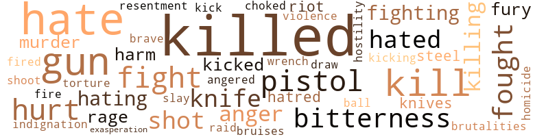

Third Ward Newark, by Lucas, Curtis (1946)
83 music-related terms matched in this text.
Most frequent terms in this topic: pipe (12); dance (12); piano (9); song (5); danced (5)
boogie.n.01
Definition: an instrumental version of the blues (especially for piano)
| word | sentence |
|---|---|
| boogie-woogie | Maggie was over at the piano , playing boogie-woogie stuff . |
dance.n.01
Definition: an artistic form of nonverbal communication
| word | sentence |
|---|---|
| dances | We gon na take up collections in all the churches , we gon na give dances , we gon na make every politician in Newark give us a hundred dollars each . |
| dance | There was a dance up on Belmont Avenue that Saturday night , and they went back to their room and started getting ready to go to it . |
| dance | On their way to the dance they stopped in a place called the Gin Mill and tried to buy some beer , but the bartender said they were kids and refused to serve them . |
| dance | Another man asked Wonnie for a dance , and she nodded . |
| dance | After the dance the men bought them some hot dogs and orange sodas . |
| dance | " We been to a dance . " |
| dance | They 're giving a dance up on Belmont Avenue tonight , and it 's about time for them to turn out . |
| dance | She told them how she and Mildred had been coming from the dance , and how the two white men had forced them into the car and carried them out into the marshlands . |
dance.v.02
Definition: move in a pattern; usually to musical accompaniment; do or perform a dance
| word | sentence |
|---|---|
| dance | Then we can dance some more . " |
dance.v.03
Definition: skip, leap, or move up and down or sideways
| word | sentence |
|---|---|
| danced | On Saturday nights all the girls gathered together in the dining room and played the piano and danced , while the woman would stand around and clap her hands , and sometimes dance with them . |
| dance | On Saturday nights all the girls gathered together in the dining room and played the piano and danced , while the woman would stand around and clap her hands , and sometimes dance with them . |
| danced | Mildred went back and danced twice with the man who had paid her way in , while Wonnie sat on a bench and watched . |
| dance | Wonnie had never been in a dance hall before , and she was afraid to try to dance . |
| dance | " I came in here to have a good time , and I brought you along so I 'd have somebody to dance with . |
| danced | A man came up and caught Mildred by the hand and danced away with her . |
| danced | Mildred was a good dancer , and she smiled sweetly at the man as she danced . |
| danced | In between drinks they ate and danced , and as the night wore on uninvited couples drifted in and were made welcome . |
| dance | Now shut up your big mouth and come on and dance with me . |
guitar.n.01
Definition: a stringed instrument usually having six strings; played by strumming or plucking
| word | sentence |
|---|---|
| guitar | Blind Harry Croomes sat in a folding chair in front of the Gin Mill and played a guitar , while his daughter , little Audrey Croomes , went about with a tin cup , collecting whatever money trickled their way . |
| guitar | Finally he dropped the guitar to his lap and called to his daughter . |
| guitar | He lifted the guitar and picked at the strings experimentally . |
| guitar | He stood and listened to the crying strings of the guitar , and strings in his soul seemed to cry out in answer . |
| guitar | Outside , Blind Harry sat in the folding chair playing the guitar , and little Audrey stood by , holding the tin cup . |
kick.v.04
Definition: kick a leg up
| word | sentence |
|---|---|
| kicking | He was just rearing and kicking like everything , but Big Mack put him out all the same . |
medley.n.01
Definition: a musical composition consisting of a series of songs or other musical pieces from various sources
| word | sentence |
|---|---|
| medley | Radios were being played all over the Hill and down in The Neck below the Hill , sending a medley of church songs out from the dilapidated , unpainted buildings into the streets . |
music.n.01
Definition: an artistic form of auditory communication incorporating instrumental or vocal tones in a structured and continuous manner
| word | sentence |
|---|---|
| music | A woman , big-boned but not fat , sat at the piano over in the corner playing boogie-woogie music . |
| music | The boogie-woogie music at the piano had stopped abruptly . |
| music | She opened the book , crossed her legs , and as the music came from the radio she kept one foot moving with the rhythm . |
| music | Maggie was still playing boogie-woogie music , and the shriveled old hag was still shuffling about , wiggling her body , trying desperately to interest someone . |
| music | There beside him , small and silent , and all that infernal music and laughter and dancing going on around them . |
musical_instrument.n.01
Definition: any of various devices or contrivances that can be used to produce musical tones or sounds
| word | sentence |
|---|---|
| instrument | Death caused by some blunt instrument , probably a beer bottle thrown during Third Ward riot . |
piano.n.01
Definition: a keyboard instrument that is played by depressing keys that cause hammers to strike tuned strings and produce sounds
| word | sentence |
|---|---|
| piano | On Saturday nights all the girls gathered together in the dining room and played the piano and danced , while the woman would stand around and clap her hands , and sometimes dance with them . |
| piano | A woman , big-boned but not fat , sat at the piano over in the corner playing boogie-woogie music . |
| piano | On the piano was a glass of whiskey ; she lifted the glass with her right hand and drank the whiskey , while she continued playing the monotonous beat with her left hand . |
| piano | The boogie-woogie music at the piano had stopped abruptly . |
| piano | Her yellow flower-splashed dress was rumpled behind , where she had been sitting on the piano stool , and she had spilled a glass of whiskey in her lap . |
| piano | " She 's always in there , sitting around playing the piano and drinking . |
| piano | Maggie was over at the piano , playing boogie-woogie stuff . |
| piano | Otis bought a double whiskey and carried it over to the piano where Maggie Croomes sat . |
| piano | Finally she had given up housework and started playing piano in the Gin Mill . |
pipe.n.04
Definition: a tubular wind instrument
| word | sentence |
|---|---|
| pipe | The workers crowded around the pipe , and Wonnie followed them to see what they were going to do . |
| pipe | The burner pulled the block of wood from one end of the pipe and stuck the torch to the opening . |
| pipe | The iron pipe grew hot , the red heat showed at the end of the pipe , then crept slowly along past the first curve . |
| pipe | The iron pipe grew hot , the red heat showed at the end of the pipe , then crept slowly along past the first curve . |
| pipe | The burner kept the torch to the pipe , and the red heat crept on . |
| pipe | The group of men watched avidly , as the hot death neared the wedged-in end of the pipe . |
| pipe | " A big rat run up that pipe there , and we burned him out . |
| pipe | When Wonnie got there the men were gathered around the pipe . |
| pipe | " She 's in that pipe . " |
| pipe | Ernie Mihie poked the angle iron up the big pipe . |
| pipe | They were urging Ernie to go on , to put the torch to the pipe . |
| pipe | Ernie lowered the torch to the mouth of the pipe , and she started screaming and trying to get away from the men who held her . |
| pipes | Some colored men have minds that ought to be sewer pipes , the same as white men . |
rhythm.n.04
Definition: the arrangement of spoken words alternating stressed and unstressed elements
| word | sentence |
|---|---|
| rhythm | She opened the book , crossed her legs , and as the music came from the radio she kept one foot moving with the rhythm . |
section.n.01
Definition: a self-contained part of a larger composition (written or musical)
| word | sentence |
|---|---|
| section | Once off Market Street , they were plunged into the familiar voices and sounds of the Negro section . |
| section | They wandered out of the Third Ward , out of that ghettoed community , and came into the peace and quiet of a white section of the city . |
sing.v.02
Definition: produce tones with the voice
| word | sentence |
|---|---|
| sang | He had a rich voice , and he sang in a plaintive way . |
| sang | What the man sang was around them , crowding them , smothering them . |
| sings | " She plays in here , while her husband sits outside and sings about how wicked this place is . " |
| sing | He says he 's gon na sit out there and sing as long as she plays in here . |
| sang | " I 'm getting drunk , " she sang . |
| sang | He even laughed at the blind man who sat outside his place and sang about the wickedness of the Gin Mill . |
| sing | " Let him sing , " Ernie said . |
singing.n.01
Definition: the act of singing vocal music
| word | sentence |
|---|---|
| singing | The people gathered around him , thicker and thicker , listening to his singing . |
| singing | Outside her husband was sitting in a folding chair , singing about the wickedness of the Gin Mill . |
| singing | Blind Harry sat just outside the door , singing as usual . |
| singing | She felt light and gay , felt something singing inside . |
song.n.01
Definition: a short musical composition with words
| word | sentence |
|---|---|
| songs | Radios were being played all over the Hill and down in The Neck below the Hill , sending a medley of church songs out from the dilapidated , unpainted buildings into the streets . |
| song | He picked at the strings between stanzas , letting the words of the song sink in , making the song last a long time . |
| song | He picked at the strings between stanzas , letting the words of the song sink in , making the song last a long time . |
| song | They could understand the song ; they could feel it . |
| song | Joe Anderson stood in front of the Gin Mill , listening to the blind man 's song . |
| song | To hell with the song ! |
tune.n.01
Definition: a succession of notes forming a distinctive sequence
| word | sentence |
|---|---|
| line | When they reached the theater he stood patiently in line at the ticket window , while Wonnie entered the lobby and stared at coming attractions . |
| lines | He led her back aft , picking his way over welder 's lines and air hoses . |
| lines | If you can stay on your feet and do n't get tangled up in all these lines , you 'll be doing pretty good . |
| line | Right now I got to get back to work , so you take Mary 's line there and show me how good you can weld . " |
| line | " See this line here ? |
whistle.v.01
Definition: make whistling sounds
| word | sentence |
|---|---|
| whistle | They finished eating , then talked until the whistle blew . |
| whistle | Wonnie and Mary went on deck , where they stood waiting for the whistle to blow . |
| whistle | How to get off the ship before lunch time in order to be near the canteen when the whistle blew , which supervisors to dodge and which ones not to worry about , how to get to the ladies ' room at four o'clock to powder up , and a thousand other little things . |
| whistle | One of them started blowing his whistle , while the other two fought their way into the crowd and pulled the soldier to his feet . |
216 violence-related terms matched in this text.
Most frequent terms in this topic: killed (39); hate (20); kill (15); gun (15); fight (9)
aggravation.n.01
Definition: an exasperated feeling of annoyance
| word | sentence |
|---|---|
| exasperation | " All right , " the detective said one day in exasperation . |
anger.n.01
Definition: a strong emotion; a feeling that is oriented toward some real or supposed grievance
| word | sentence |
|---|---|
| anger | Otis Evans waited until the crowd roared in anger , and then he thundered : " But we gon na do something , ladies and gentlemen . |
| anger | She had fits of anger , periods of bitterness , because she was helpless to correct a great wrong . |
| Anger | Anger was all over his face , and his eyes were blazing . |
| anger | She thought of Ernie 's words again , and her anger mounted . |
| anger | Otis felt the anger in him mounting . |
anger.v.02
Definition: become angry
| word | sentence |
|---|---|
| angered | It was the way she talked that had angered Ernie . |
bruise.n.01
Definition: an injury that doesn't break the skin but results in some discoloration
| word | sentence |
|---|---|
| bruises | She had a fractured skull , her jaw was broken , and she had suffered multiple bruises about the face and body . |
draw.v.23
Definition: pull (a person) apart with four horses tied to his extremities, so as to execute him
| word | sentence |
|---|---|
| draw | It was as if she were a weak , terrified child , seeking to draw strength from his nearness , from the warmth of his body . |
ferociousness.n.01
Definition: the trait of extreme cruelty
| word | sentence |
|---|---|
| brutalities | There were mass meetings almost every night , and all the people on the Hill turned out and cheered as Otis Evans recounted police brutalities . |
fight.n.02
Definition: the act of fighting; any contest or struggle
| word | sentence |
|---|---|
| fighting | " I been overseas fighting for you . |
fight.n.05
Definition: a boxing or wrestling match
| word | sentence |
|---|---|
| fight | People in the Third Ward liked him because he had the know-how and the fight to protect them . |
| fight | " In the Third Ward of Newark Where they ball and fight , Where they drink an ' they gamble , An ' make love all night - An ' make love all night ! " |
| fight | Get a fight going in the Gin Mill , get everybody excited , running around , trying to get out . |
| fight | He wanted the people to be drunk and rowdy , he wanted a fight if he could get one . |
| fight | " Come fight fair . " |
| fight | From what I can learn , Ernie plied that soldier with liquor after he was already drunk , and the fight that resulted in Wonnie 's death started in his place . |
| fight | Then pneumonia set in , and the doctors had a fight on their hands . |
fight.v.02
Definition: fight against or resist strongly
| word | sentence |
|---|---|
| fought | Wonnie too had wanted to go where they sent Hattie ; she had cried and fought . |
| fought | On West Street a pimp was beating his woman ; he knocked her down and kicked her brutally , while she fought back , cursing him bitterly , calling him a fairy . |
| fight | The boy had wanted to fight Ernie . |
| fought | The other man tried to kiss Wonnie , and Wonnie fought him . |
| fought | She gave all she had , she fought with all her strength , trying to build the old man 's place up . |
| fighting | She was doing something , she was fighting back . |
| fighting | They were always knocking on the front door , and when they got upstairs there was a lot of cursing , and sometimes fighting . |
| fought | Then Wonnie heard them struggling , heard Mildred panting as she fought the man . |
| fighting | Is this what I been fighting for ? |
| fight | Did I go away and fight so some bitch could tell me I got to drink by myself just because I 'm white ? " |
| fought | One of them started blowing his whistle , while the other two fought their way into the crowd and pulled the soldier to his feet . |
| fought | Who would have thought the girl would have fought him like she did ? |
| fought | For two days she had screamed and fought her attendants ; for two days she had struggled with them , trying to get out of bed and escape . |
fury.n.01
Definition: a feeling of intense anger
| word | sentence |
|---|---|
| fury | This time her voice was sharp , taunting , with a suggestion of fury in it . |
| rage | The white man 's eyes were glinting dangerously , his face was livid with rage . |
| fury | The fury in her voice was mighty in its quietness , the hate in her eyes was a living thing . |
| fury | Her face was still drawn with fury , her brownish eyes still glowering . |
| rage | Ernie had flown into a rage . |
| rage | In the Third Ward the story whipped the people into a frenzied rage . |
gag.v.06
Definition: cause to retch or choke
| word | sentence |
|---|---|
| choked | Hattie choked back a sob . |
gun.n.01
Definition: a weapon that discharges a missile at high velocity (especially from a metal tube or barrel)
| word | sentence |
|---|---|
| gun | Ernie Millie worked quietly at the Gin Mill and watched the black man gun for Commissioner Hart . |
| gun | Take this gun , and if you see any white men bothering her , let them have it . |
| gun | " Did you have that gun with you ? " |
| gun | " But keep the gun with you whenever you go to places like that with her . |
| gun | " And I 'll have that gun , too ! " |
| gun | He had a gun , and he told the girls that if they did n't keep quiet he would kill them . |
| gun | The man pointed the gun at her . |
| gun | The policeman drew his gun and fired into the air . |
| gun | " Stand back ! " the policeman ordered , drawing his gun . |
| gun | He stood facing the policeman and the white boy , not even noticing the gun . |
| gun | He picked up the gun again . |
| gun | And the gun went off ..... . |
| gun | He slumped to the floor and the gun slid out of his fingers . |
| gun | Ernie had n't known until then that Walter had a gun with him . |
| gun | Ernie owned a gun , but he always left it at the Gin Mill , behind the cash register . |
| guns | Ernie did n't like to carry guns around with him when he was drinking . |
| guns | They never argued , they let their sticks and guns talk for them . |
harm.v.01
Definition: cause or do harm to
| word | sentence |
|---|---|
| harm | Do n't you let them bastards harm her , you hear ! |
hate.n.01
Definition: the emotion of intense dislike; a feeling of dislike so strong that it demands action
| word | sentence |
|---|---|
| hate | Her brown eyes were wild and insane , and red-hot with hate . |
| hate | Ernie did n't care about the hate , so long as he got their money . |
| hate | Large , brown , they had a brooding quality about them ; she was watching Ernie Millie , and her eyes were full of fire , even of hate . |
| hate | The fury in her voice was mighty in its quietness , the hate in her eyes was a living thing . |
| hate | You can see hate in their eyes . |
| hatred | They were callously indifferent to the looks of hatred that the colored people gave them . |
| hatred | At last she turned her head so that she was looking at the detectives , and there was hatred in her eyes . |
hate.v.01
Definition: dislike intensely; feel antipathy or aversion towards
| word | sentence |
|---|---|
| hated | Down at City Hall they called him a malcontent , and they hated him . |
| hated | Most of them hated Ernie , but that did not bother him . |
| hate | Colored people would hate a white man and curse him - and still spend their money with him . |
| hated | The colored people hated Big Mack as much as they hated Ernie himself , they called him an Uncle Tom , a stooge for white men . |
| hated | The colored people hated Big Mack as much as they hated Ernie himself , they called him an Uncle Tom , a stooge for white men . |
| hates | She hates to have him begging on the streets , and he hates to have her playing in here . |
| hates | She hates to have him begging on the streets , and he hates to have her playing in here . |
| hating | For the first time Ernie started hating his invalid wife . |
| hate | You know which girl you hate , which girl you keep telling to stay out of here . |
| hating | " When I think about her I start hating white people . |
| hate | I hate them so much that my head hurts . |
| hating | But we ca n't start hating people , Wonnie . |
| hate | If we do n't do that , we can hate all our lives , and it wo n't get us any place . " |
| hating | Do n't you think something like that is better than hating all the time , Wonnie ? |
| hated | Mary had liked working with Joe , and she hated to leave , Wonnie could see that . |
| hated | Joe was always working overtime , and she hated to go to that house where she would be alone until Joe came home . |
| hate | That 's why I hate to see white men opening stores and getting all our trade . |
| hate | If they do n't like us , if they hate us so much , then why do they open all the restaurants and grocery stores in the Third Ward and get rich off us ? " |
| hate | " If there 's anything I hate , it 's to see flypaper hanging all over a restaurant . |
| hate | I hate them as much as you do . |
| hate | We all hate them . |
| hate | They hate me . |
| hate | " But they hate me . |
| hate | They hate me because I 'm white . |
| hate | Even the whores hate me . |
| hate | They hate all white men . " |
| hate | We hate you , you bastard ! " a bitter voice shouted . |
homicide.n.01
Definition: the killing of a human being by another human being
| word | sentence |
|---|---|
| homicide | The homicide squad went about investigating , and they came up with a pat explanation : " The white soldier was up there shooting off his mouth , " they reported . |
hostility.n.01
Definition: a hostile (very unfriendly) disposition
| word | sentence |
|---|---|
| hostility | But in place of the hostility that had been in his eyes at first , there was a terrified , haunted look . |
hurt.v.04
Definition: cause damage or affect negatively
| word | sentence |
|---|---|
| hurt | She could sec he was hurt again . |
indignation.n.01
Definition: a feeling of righteous anger
| word | sentence |
|---|---|
| indignation | Wonnie was all indignation and beauty , in a tantalizing , tan-and-gold sort of way . |
injury.n.01
Definition: any physical damage to the body caused by violence or accident or fracture etc.
| word | sentence |
|---|---|
| harm | Then there wo n't be any harm in his meeting Otis Evans , will there ? " |
| hurt | She saw that he was a little hurt about it , and she hurried to put things right . |
| harm | " I do n't mean no harm . |
| hurt | " But the girl 's hurt , Pete . " |
kick.v.04
Definition: kick a leg up
| word | sentence |
|---|---|
| kicking | He was just rearing and kicking like everything , but Big Mack put him out all the same . |
kick_back.v.02
Definition: spring back, as from a forceful thrust
| word | sentence |
|---|---|
| kick | We gon na kick Albert Hart the hell out of City Hall ! " |
| kicked | Politicians kicked in , church members gave , and racketeers came across . |
| kicked | On West Street a pimp was beating his woman ; he knocked her down and kicked her brutally , while she fought back , cursing him bitterly , calling him a fairy . |
| kicked | He grabbed her by the feet and raised them high in the air , then kicked her systematically on her unprotected buttocks . |
kill.v.10
Definition: cause the death of, without intention
| word | sentence |
|---|---|
| killed | Two white men came up here and carried away two colored girls and killed one . |
| killed | Remember that woman that they killed down in The Neck ? |
| killed | He went to New York and tried to cut in on the numbers racketeers , and they killed him for his trouble . |
| killed | Ernie had killed that colored girl , and Walter had known about it . |
| kill | " It would n't do you much good to kill me , Ernie , " she said . |
| kill | " Did you kill him too , Ernie ? " |
| killed | " The racketeers killed him . |
| killed | They killed him in New York . " |
| killed | " I can understand that Ernie Mihie killed Mildred , and you not gon na do anything about it . " |
| killed | " What if I see the man who killed Mildred ? " she asked Otis Evans one day . |
| killed | You killed a colored girl , Ernie - and she was my friend . |
| kill | I want you to kill yourself , that 's what I want . |
| killed | You killed Mildred , Ernie , and she never did one thing to you . " |
| kill | He knew he was going to kill her . |
| killed | He had to do it before she drove him all the way , before he went crazy and killed himself . |
| kill | He was going to kill another colored girl . |
| kill | Wonnie is my cousin , and I 'll kill anybody who bothers her . |
| killed | But when Wonnie had continued to show a dread of white men , and when she had talked about the possibility of finding the man who had killed Mildred , Hattie had become alarmed . |
| killed | She is the only one who saw the men who killed Mildred , and they may decide to get rid of her . |
| killing | He had to plan , he had to devise some safe way of killing that girl . |
| kill | He loved life , and he would kill and keep on killing in order to live . |
| kill | The girl had driven Ernie Millie to desperation , she had driven him to a point where he had decided it was best to kill her ; and then , unknowingly , she stymied his plans by not going back to the Gin Mill . |
| killed | That way he killed two birds with one stone ; he kept on good terms with the police , and at the same time he did a brisk business with the men who came into his place to pick up colored girls . |
| killed | They - they killed her . " |
| kill | " You want to kill your fool self ? " the man asked . |
| killed | They killed a rat up there , and it upset her . " |
| killed | " I was n't scared just because they killed him , " Wonnie said quickly . |
| killed | He had killed Mildred and gotten away with it , he would never be punished . |
| kill | He had a gun , and he told the girls that if they did n't keep quiet he would kill them . |
| killed | ANOTHER COLORED GIRL HAD been killed up on the Hill . |
| killed | " But Ernie killed her , " Joe shouted . |
| killed | " He killed her , I tell you . |
| killed | I do n't know why , but he killed her . |
| killed | Accidentally killed . |
| killed | " He killed her , Mr. Evans . |
| kill | It ai n't right for him to kill her and get away with it like he 's doing . " ' |
| killing | For eight days he lived on whiskey and black coffee ; he ranted at Maggie and Big Mack , and he came close to killing his invalid wife . |
| killed | He had killed Wonnie to rid himself of a tormentor . |
| killed | Accidentally killed . |
| killed | " Ernie , " Joe said , " how come you killed my wife ? " |
| killed | " This man killed my wife , and I 'm gon na find out how come . |
| killed | How come you killed my wife , Ernie Millie ? |
| killed | How come you killed her ? " |
| killed | " How come you killed my wife ? " he panted . |
| killed | " How come you killed her ? " |
| kill | He had never dreamed he could kill anyone with his fists . |
| killed | And remember , you killed her , not me . |
| killed | The police in Newark do n't give a damn about a colored girl getting killed . |
| killed | This ai n't the first time a white man killed a colored woman . |
| killed | Remember that woman down in The Neck that a white man killed ? |
| killed | Remember that woman that got killed in that house up on Kinney street ? |
| kill | " But Walter , you ca n't kill a girl like that and get away with it . |
| kill | Then the Director of Public Safety sent more men up on the Hill and told them to shoot to kill . |
| kill | " Did they - kill her ? " |
| killed | They killed Mildred . |
| killed | They killed her and threw her body in the Passaic River . |
killing.n.01
Definition: an event that causes someone to die
| word | sentence |
|---|---|
| killings | One of those killings where the girl was dead and the police could find nothing . |
| killings | He pressed a buzzer and asked for all the reports on the two killings . |
killing.n.02
Definition: the act of terminating a life
| word | sentence |
|---|---|
| killing | He loved life , and he would kill and keep on killing in order to live . |
knife.n.02
Definition: a weapon with a handle and blade with a sharp point
| word | sentence |
|---|---|
| knife | It was a world of burners and goggles and torches that cut steel plates with the ease that a table knife cuts butter ; it was a world of chippers and caulkers , with their air hammers stabbing out in thunderous chatter , wreaking havoc with human eardrums . |
| knife | She put the plate before him , laid the knife and fork on a napkin , and gave him a glass of water . |
| knife | What you got there , a knife ? |
| knife | " She had a knife , Walter . |
| knife | I wish you would put your hand on a knife . |
| knife | The girl pulled a long-bladed knife from her handbag and held it ready . |
| knives | " They all got knives , " Ernie said . |
| knives | But they got knives open in their handbags . " |
murder.n.01
Definition: unlawful premeditated killing of a human being by a human being
| word | sentence |
|---|---|
| murders | Then they 'd have you for two murders , instead of just one . " |
| murder | Until she faced the man she had thought it would be easy ; she would just walk in and tell them that Ernie Millie was the man , and they would lock him up and charge him with murder . |
| murders | He accused Ernie outright of two murders , and he used every method he knew to make him confess . |
murder.v.01
Definition: kill intentionally and with premeditation
| word | sentence |
|---|---|
| slay | I 'll slay open late at night . |
musket_ball.n.01
Definition: a solid projectile that is shot by a musket
| word | sentence |
|---|---|
| ball | " In the Third Ward of Newark Where they ball and fight , Where they drink an ' they gamble , An ' make love all night - An ' make love all night ! " |
open_fire.v.01
Definition: start firing a weapon
| word | sentence |
|---|---|
| fire | " We can fire you if you refuse to go where you are told . |
| fired | The policeman drew his gun and fired into the air . |
pain.v.02
Definition: cause emotional anguish or make miserable
| word | sentence |
|---|---|
| hurt | He ca n't hurt my place . " |
| hurt | I want to do something to hurt them all the time . |
| hurt | She could n't hurt him , no matter what she did . |
| hurt | " If he hangs around here and talks like that somebody 'll hurt him . " |
| hurt | The boy was hurt badly . |
| hurt | " We wo n't hurt you , " he said . |
pistol.n.01
Definition: a firearm that is held and fired with one hand
| word | sentence |
|---|---|
| pistol | He looked at the cash register , where his pistol was . |
| pistol | Something was eating into his heart , and he started going to the cash register and looking at that pistol that he kept behind it . |
| pistol | Then , when he had seen the pistol , he would shudder . |
| pistol | And Ernie Millie looked at the pistol that lay behind the cash register , and he shuddered as he looked at it . |
| pistol | The pistol was still there . |
| pistol | He looked at the pistol again . |
| pistol | He spat blood and looked at the pistol . |
| pistol | He looked at the pistol for a long time . |
| pistol | He took the pistol in his hand , held it there looking at it . |
raid.v.01
Definition: search without warning, make a sudden surprise attack on
| word | sentence |
|---|---|
| raid | Someday the police will raid that house , and we 'll be in jail . |
resentment.n.01
Definition: a feeling of deep and bitter anger and ill-will
| word | sentence |
|---|---|
| bitterness | She had fits of anger , periods of bitterness , because she was helpless to correct a great wrong . |
| bitterness | There was a kind of gentleness about him that seemed to rest her , that seemed to hush all the tumult and fears and bitterness in her mind . |
| bitterness | The colored lawyer stood on the sidewalk a moment , looking at the Gin Mill with bitterness . |
| bitterness | The old bitterness came back to Wonnie then , the old resentment started burning in her again . |
| resentment | The old bitterness came back to Wonnie then , the old resentment started burning in her again . |
| bitterness | But she did not go up to the Gin Mill ; she went home to Joe , and there the bitterness left her . |
| bitterness | Her lips were pressed a little tighter together than usual , her face was a little more sullen , and her eyes had a little more bitterness in them as she watched Ernie Millie serving drinks . |
| bitterness | The bitterness was deeper than usual in her . |
riot.n.01
Definition: a public act of violence by an unruly mob
| word | sentence |
|---|---|
| riot | " Tell them to send the riot squad and the ambulance down here . |
| riot | Death caused by some blunt instrument , probably a beer bottle thrown during Third Ward riot . |
shoot.v.02
Definition: kill by firing a missile
| word | sentence |
|---|---|
| shot | They shot him to death and cut off his head and put it in a vacant house in Brooklyn . |
| shot | Boys and men shot dice under street lights ; they swore loudly , disregarding the women and children passing . |
| shot | " I 'd have shot hell out of him if he had touched her . |
| shot | I 'd have shot hell out of him if he had touched either one of them ! " |
| shot | " I should 've shot him anyway . |
| shot | " I should have shot that black bitch , " Walter said . |
| shoot | Then the Director of Public Safety sent more men up on the Hill and told them to shoot to kill . |
sword.n.01
Definition: a cutting or thrusting weapon that has a long metal blade and a hilt with a hand guard
| word | sentence |
|---|---|
| steel | It was a world of burners and goggles and torches that cut steel plates with the ease that a table knife cuts butter ; it was a world of chippers and caulkers , with their air hammers stabbing out in thunderous chatter , wreaking havoc with human eardrums . |
| steel | She saw a burner cutting a steel plate , and she stopped to watch him . |
torment.v.01
Definition: torment emotionally or mentally
| word | sentence |
|---|---|
| torture | She was an apparition out of Ernie 's past , come to torture him . |
violence.n.01
Definition: an act of aggression (as one against a person who resists)
| word | sentence |
|---|---|
| violence | Joe sensed her agitation , he felt the violence of her passion , and it moved him to passions of his own . |
weather.v.01
Definition: face and withstand with courage
| word | sentence |
|---|---|
| brave | She had been pretty brave about it when Harry Croomes first went blind ; she had gone out and done housework by the day , she had struggled hard to make ends meet . |
wrench.n.01
Definition: a sharp strain on muscles or ligaments
| word | sentence |
|---|---|
| wrench | Ernie drove away just as the girl reached the car and tried to wrench the door open . |
30 religion-related terms matched in this text.
Most frequent terms in this topic: church (10); God (7); Christ (2); devil (2); siren (2)
church.n.02
Definition: a place for public (especially Christian) worship
| word | sentence |
|---|---|
| church | JOE ANDERSON SAW WONNIE BROWN FOR THE FIRST TIME on a Sunday morning in April when he was on his way to church . |
| church | Radios were being played all over the Hill and down in The Neck below the Hill , sending a medley of church songs out from the dilapidated , unpainted buildings into the streets . |
| church | She was a member of the Sunday School in his church , and he wanted to help her . |
| church | Joe Anderson sighed , turned , and went on up the Hill toward the church . |
| church | " I saw her for the first time today when J was on my way to church . |
| church | Maggie used to play the organ in church . |
| church | When they saw a big stone church with wide steps , they turned to it without a word and sat on the steps and watched the people go by . |
| church | " You think this is a white folks ' church , Joe ? " |
| church | They sat there on the church steps until dawn . |
church.n.04
Definition: the body of people who attend or belong to a particular local church
| word | sentence |
|---|---|
| churches | We gon na take up collections in all the churches , we gon na give dances , we gon na make every politician in Newark give us a hundred dollars each . |
| church | The saloons were open and going full blast , and the people who had been too sleepy to go to church that morning were circulating again . |
god.n.03
Definition: a man of such superior qualities that he seems like a deity to other people
| word | sentence |
|---|---|
| God | " I wish to God I could forget it . " |
| God | The Third Ward had put God away for another week , and was getting about its business of lewdness and revelry . |
| God | " They sure God better not ! " |
| God | " He sure God was about to see his Jesus and did n't know it , " she said . |
| god | It was as if some whimsical god was guiding her steps , leading her closer and closer to death , even to the brink , and then turning her around and sending her the other way . |
| gods | And the gods smiled and let them have their moment of bliss . |
| God | God knows I did n't . |
| God | " For God 's sake , keep quiet ! " |
| God | For God 's sake , what is it ? " |
jesus.n.01
Definition: a teacher and prophet born in Bethlehem and active in Nazareth; his life and sermons form the basis for Christianity (circa 4 BC - AD 29)
| word | sentence |
|---|---|
| Jesus | " He sure God was about to see his Jesus and did n't know it , " she said . |
messiah.n.01
Definition: any expected deliverer
| word | sentence |
|---|---|
| Christ | " Aw , for Christ 's sake ! |
| Christ | Christ , I did n't mean to hit her that hard . " |
religion.n.01
Definition: a strong belief in a supernatural power or powers that control human destiny
| word | sentence |
|---|---|
| faith | He was too straight and honest , too right-thinking ; he had too much faith in himself and in the world . |
satan.n.01
Definition: (Judeo-Christian and Islamic religions) chief spirit of evil and adversary of God; tempter of mankind; master of Hell
| word | sentence |
|---|---|
| devil | " In a j' int like the Gin Mill , Oh , the devil 's bol ' , Gals , they gain the dollar , But they lose their souls - But they lose their souls ! " |
| devil | " The devil always takes care of his own , Mr. Evans . |
siren.n.01
Definition: a sea nymph (part woman and part bird) supposed to lure sailors to destruction on the rocks where the nymphs lived
| word | sentence |
|---|---|
| siren | They started for the hospital with the siren wailing , and a motorcycle policeman leading the way , clearing the streets of traffic as best he could . |
| siren | It was a slow , tortuous ride , with the roar of the motorcycle and the wail of the siren sounding clearly above the horns of automobiles and shouts of celebrating crowds milling in the streets . |
temple.n.03
Definition: an edifice devoted to special or exalted purposes
| word | sentence |
|---|---|
| temple | It caught the boy on the temple , and his knees sagged . |
worship.n.01
Definition: the activity of worshipping
| word | sentence |
|---|---|
| worship | I 'm not going to put that kind of woman on a pedestal and worship her . |